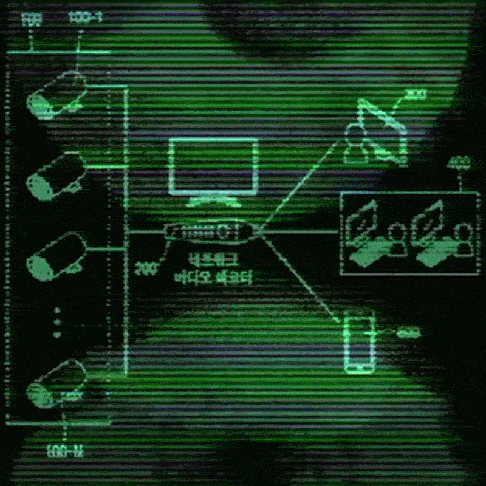

Overview
Examples of props created in Autodesk Maya
UNDER CONSTRUCTION
This piece was created based on the concept of ‘Protocol’: “a system of rules that explain the correct conduct and procedures to be followed in formal situations”. It aims to reflect upon the hottest fad for authoritarian leadership, mass surveillance. The primary symbol is that of a moving eye, having been glitched (through RGB Shift, Wobble, Jitter etc) and overlaid over a series of background images(discussed later). The viewer is never left unobserved, for the duration of the .gif The majority of the cycling images in the background of the .gif were sourced from patents on surveillance technology. The rise of surveillance companies such as Palantir, Flock, Axon and Motorola Solutions means that the need for people to obey societal norms, or ‘protocols’, is constant. Additionally, schematics for a panopticon were included. In the 1700s, Jeremy Bentham conceptualised the panopticon, a prison where inmates are unaware of when they are being watched, resulting in every prisoner acting as though they were. Now some fear that we have entered something of a societal panopticon, not only through surveillance cameras, but also personal video recording methods such as mobile phones or metaglasses. Lastly, a diagram of a lobotomy is included to reference the mind-numbing that occurs when under constant worry of being observed. Additionally, they were used as a ‘cure’ for mental illness. Against a more human approach, scrambling a patient’s brain into conformity was more convenient. The .gif also has phases where an ASCII filter is applied, alluding to the digital operations behind surveillance states.
Examples of props created in Autodesk Maya
UNDER CONSTRUCTION
